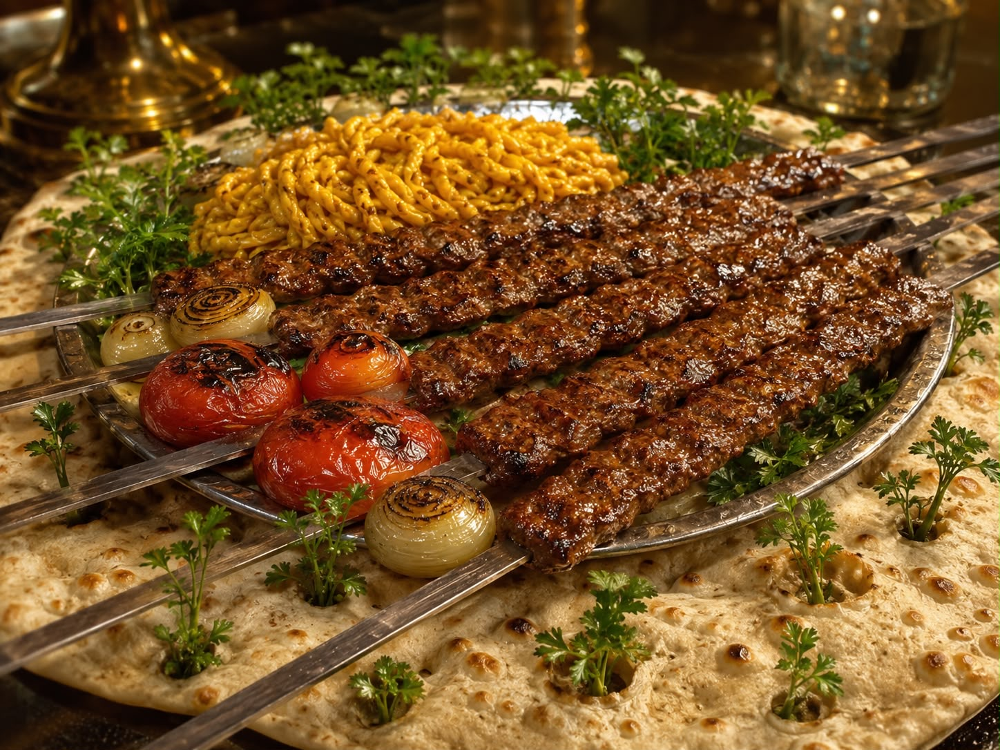
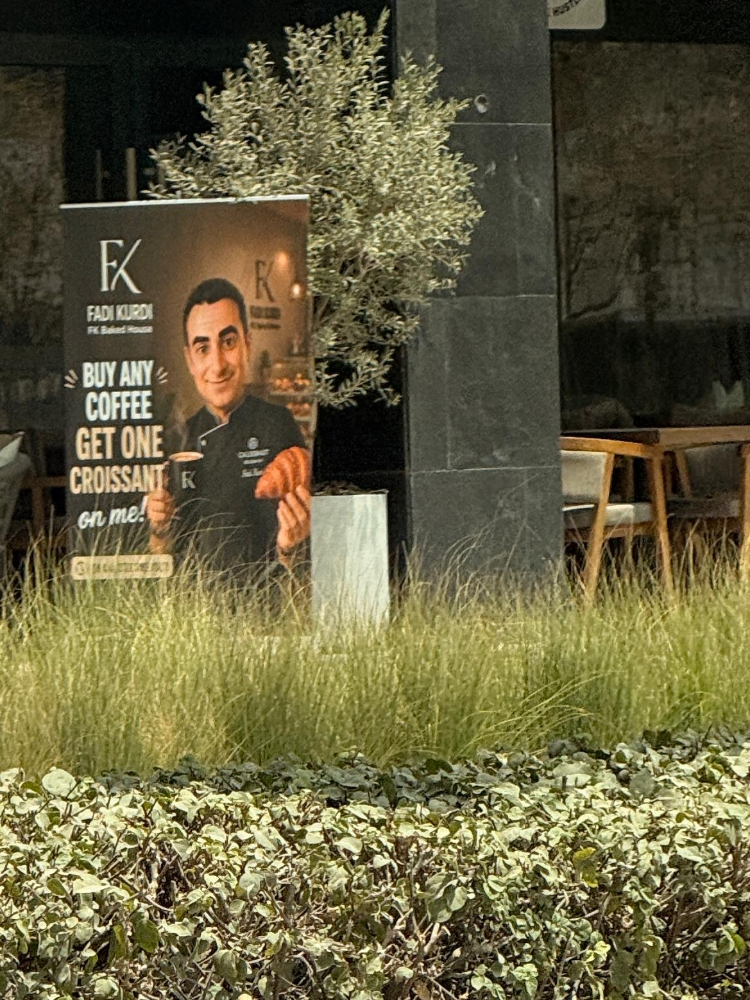
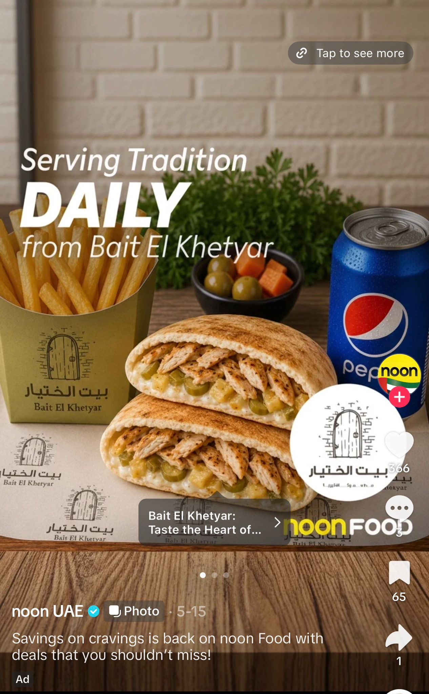
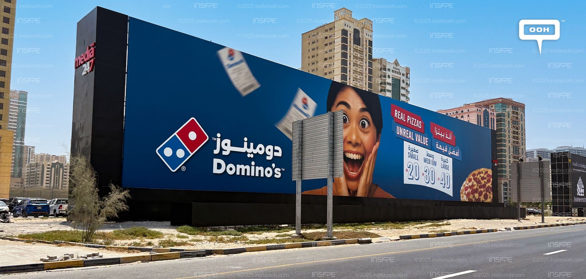

My friends,
It was last week when I opened up Talabat, browsing and scrolling through the many diverse selection of restaurants in Dubai.
As I continued to scroll, one thing grabbed my attention, and it is something that has been increasingly prevalent in our region: AI generated images of the menu and food.
Of course, this put me off and I ended up ordering some Mendy from the local place nearby, which naturally used a 480P image from 2016 to showcase their selection of foods, being much more appetizing than an AI generated image of rice looking like worms.
Fast forward yesterday, and here I was sat in a Persian restaurant with some friends who had recommended it, and of course with Dubai being Dubai, no paper menus, just scan the QR code and order away.
Being with my pals we quickly decided to order the mixed grill of koobideh and such, but with a caveat that only I had noticed; on the menu application the skewers had been photographed under a warm light, with the grilled tomatoes and onions glossy, the meat lacquered, almost looking like wax, and a sprig of parsley laid across the bread with a care that suggested somebody had thought about it.
I looked at it a second longer than I needed to. The skewers did not end; one of them entered the plate and came out again somewhere near the edge of the frame. The rice on the left had this darkish yellow colour, more like urine rather than saffron, piling up to look like a pile of thick worms rather than the Persian staple, with the parsley growing out of the bread rather than resting on it.

The food arrived twenty minutes later, and it was good. Fantastic even, I love Persian cuisine, being an Iraqi it reminds me much of food back home but with a more uniformed look and taste in the dishes (we Iraqis use too much fat and cholesterol in our food, and presentation isn't really our thing, but still delicious and my favourite cuisine don't get me wrong.)
The food was tender, succulent, and fulfilling, exactly what it should have been. Nobody had lied to me about the food, but rather I had felt betrayed because I was indeed lied to when it came to the photograph of the food, which is a strange thing to lie about, because the true dish was sitting in the kitchen, cooked, forty seconds away from a phone camera. They could have just taken a photo rather than use the AI-slop that was produced.
And once you notice it, you cannot stop.
My barber's window now has six men whose hairlines belong to no living skull. The coffee shop under my apartment now has a huge banner with the owner AI generating himself holding the free croissant you get with every coffee you order. The dental clinic advertisement in the lift has a dentist generated to look Arab in the way a foreigner would draw an Arab.

Then there is my uncle. Khalo.
I want to be careful here, because the easy thing is to sneer and mock, but I really do love my uncle.
Men of my uncle's generation have perhaps forty photographs of their entire youth. Fifty at most. His wedding, his graduation, and two or three afternoons somebody happened to have film for. The birth of his child. Simple stuff really, and most of that was lost when my uncle fled Iraq a few months before the War kicked off in April 2003. So, to be completely fair, my uncle probably spent fifty years being under-photographed
And then the miracle came, the machine arrived that would produce these images he had craved for so long, infinitely, in any life they liked.
So, today on Facebook he is a Knight. Tomorrow he is a Sultan on a balcony over a river. And the day after he is a General. And just a month ago he was the Mona Lisa, with his goatee in the frame, in the Louvre.
Beneath each one, a few comments of "Mashallah" from men who were boys with him in a country none of them live in anymore. And I refuse to be cruel about this, he is not deceiving anyone, and everyone knows nothing is real.
But what kills me is that this is the same uncle who introduced me to photography and film just a decade ago. This is the same uncle who bought me my first camera when I was 16, this is the same uncle who tried to push my parents to accept me studying film, when everyone else in the family was obliging me to pursue the world of law, rather than hold a camera and do what I love most, and what I love most came directly from him.
This uncle of mine used to paint and take candid photos, a lot, and for me he was very much the first artist I ever really knew. Until the machine came. Sadly today, all his creativity has been diluted to a prompt, but he loves it. And I love my uncle, so who am I to tell him to stop generating these images of himself.
But it kills me, because in this case the machine has lazily replaced the creative, and in our region, it may very well replace all creatives.
My uncle has stopped posting his lovely collection of photographs around the world, today I open his account and all I see is him sitting next to Shrek and Mickey Mouse or some stupid shit like that. This is what is infuriating me, as what is happening to my uncle is happening to the majority of these older generation Arabs, most of whom have turned to AI to now replace professions in their businesses and such too.
Lets look at the West, the machine arrived and displaced a profession, and at first it took work from photographers, copywriters, designers, illustrators, translators. But, with the Western world being what it is, these were people who had unions, or rates, or at minimum a professional class that could complain loudly enough to be reported on.
Here in Arabia, most of those roles were never dignified as work in the first place. Ask a restaurant owner in this region to pay a photographer to shoot his own menu and, before the machine existed, he would have laughed at you and sent his nephew with an iPhone.
The machine did not take that man's job, but rather compelled him to confirm a suspicion he already held; that the job was never necessary, and that the intermediate labour between having a thing and displaying a thing was an expense to be eradicated.
And that habit is old, older than any of us. We have always been fluent in the procured surface. The rented car for the engagement pictures, the wedding that costs three years of salary, the degree from an institution that exists mainly as a letterhead. The mother who tells the neighbours her son is an engineer in Germany, the doctor in Canada, or the lawyer in London. We fucking love to show off. And now we can show off the AI self. We have generations of practice in the idea that appearance is a thing you obtain rather than a thing you earn. But the part that I find hardest to sit with is what is happening in the other direction, in the places we usually copy.
In the West there is a fight going on, and the creatives are winning more of it than anyone expected. A studio releases a poster with six fingers on it and then Twitter takes the poster apart by lunchtime. Brands put made by humans on their packaging, publishers advertise that the cover was drawn by a named illustrator, agencies lose accounts over it, actors and writers went on strike over it and came back with clauses in their contracts about it.
Refusing the machine there has become a commercial position. It costs money, and it buys something: credibility, taste, the impression of a company that can afford not to cut the corner. In the West, the audience, or the consumer, whomever the end product is aimed towards, punishes the shortcut, and so the shortcut has a price, leading to the human keeping his commission.
None of that exists here, and I doubt any of it is coming. Arabia rather rewards the shortcut.
No consumer in this region is going to boycott a shawarma place over a generated photograph. No brand here will ever gain a single dinar, dirham or riyal of goodwill by announcing that a person made its artwork, because the audience it is speaking to does not experience that as a virtue. The designers in Arabia have no union, no strike, no contract clause, no press that will run the story.

Some months ago this "famous" “influencer” in Jordan released a totally generated "Heroes of Arabia" AI-slop kids book of "Arabian Heroes". Of course there was nothing Arab about the heroes, instead of Captain America you got Captain Jordan, instead of Scarlett Witch you got "Princess Petra" or some shit, none of it was original, it was just an AI copy of the Western interpretation of the superhero. It was bullshit. Yet almost no one, other than a few comments bringing it up and being ignored among hundreds mindlessly praising the project solely due to the influencer tied to it, said anything about it.
The graphic designer in a marketing office here in the Gulf is probably a young Jordanian, Lebanese, Indian or Filipino on a very modest salary and a visa that belongs to his employer, and now he finds himself competing with a $20 subscription, costing less than his transport allowance.
He cannot appeal to principle, because nobody here has agreed that a principle is at stake.
He can only compete on price, and price is the one argument he is very much guaranteed to lose, and so the same technology arrives in two places and does opposite things.

In the West it meets an organised creative class with something to defend, and the resistance becomes part of the culture. Here it meets people who were never given the standing to resist, and it simply erases them, quietly, one menu or placard at a time, and no one writes about it because there is no one whose job it is to write about it.
And we lose something beyond the salaries, which I think we have not begun to count. A region's visual language is made by its own people looking at it. Take a photographer who knows what the light does on that specific street at that hour, the designer who knows which shade of blue or green or red is ours and which one belongs to a European brand guideline. We were truly building that. It was decades late, yet it was finally starting. Now we are outsourcing it to a model that learned what an Arab looks like from other people's photographs of us, and it is feeding that back to us, and we are accepting it as our own reflection.
And I say all of this as a man who is standing inside it, not above it. When it comes to me, Omar Haroon: I work in law, and yes, I do use Claude, and I love Claude (thankfully Claude does not generate images). The biggest worry that comes out of my use of the great Claude is a citation that is wrong, or an article of a law that has been hallucinated, numbered plausibly, formatted correctly, sitting inside a document and skipped over by whoever is going to read and sign off my work. The fake provision looks exactly like a real one, because the truth in my profession is also just a number and a sentence, and the machine has learned the shape of both perfectly. And if it does get skipped over, and it makes its way to Court, and the Judge catches on, then I am fucked.
So my job now pays me to verify everything, constantly, which is a strange kind of work to be paid for: the machine saves me two hours and takes one of them back in checking, and I am supposed to interpret that as progress.
I use these tools every day. I use them to translate, to structure, to help me reason through the cases I am working on, to produce the first version of a draft I will later present as though I laboured over it. And I tell myself the difference is that I check, that I read the provision, that I open the judgment, that nothing leaves my hands unverified. Maybe that is true. But it is also more or less what every man posting himself as a sultan tells himself, in his own way, about his own harmless little shortcut.
Nobody thinkg they are the problem.
That is the trouble with all of this. Nobody thinks they are the problem, whilst everybody has a reason why their own use of it is fine. Every single one of those reasons is reasonable on its own. Put together, they are eating the profession of every creative person in this region, and nobody is saying a word. Nobody is protecting us from misusing the machine. No one has the balls to stand up in a marketing meeting in this region and say that we should pay the graphic designer to capture what we actually know about ourselves, rather than lean on a machine that tells us what it thinks we are, assembled out of the Western photographs and elucidations it was trained on. And this is happening in a part of the world where trust was already the scarcest commodity we had. We are the last region on earth that could afford this, yet we are adopting it the fastest.
And it will inevitably cost us the artists we already had. My uncle is not a statistic in somebody's report on displaced labour, he is the man who bought me a camera when I was sixteen and argued with my parents about it. He did not lose his hobby to the machine, rather he handed it over, gladly, because nobody in his life, including me, ever told him that what he made with his own eye was worth more than what he could generate in nine seconds.
In fact, it was my uncle who taught me that "the camera will always fail to mimic the eye" when it came to framing a photograph or shot, meaning the goal of the shot was to create something visually pleasing to the audience, yet now he uses the machine to mimic the idea in his head, rather than act on it and create something tangible himself.
I keep coming back to the Persian place as it stuck with me more than the uncles and the citations. In their case, there was no deception worth having at all. Someone in that kitchen woke up early, lit the coals, cooked a genuinely good mixed grill, and then decided that photographing his own work was more effort than generating a photograph of nothing at all. It breaks me. Why did he think the worm-rice was a better look than the real thing sitting in his own kitchen? The food was real, and it was good. He simply did not believe that anyone would care about that.

Click the picture to return home.